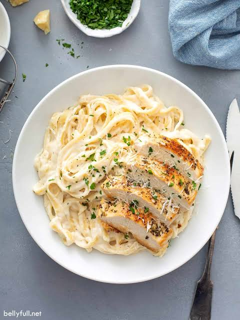

Cook the pasta: Bring a large pot of salted water to a boil then add your pasta.
Cook until al dente and save some pasta water for later.
Make chicken: Season chicken with the Spices
Add oil into medium to high heat pan and wait until shimmering.
Add the chicken and leave undisturbed for 5-7 minutes.
Take chicken out of pan and let it rest for 3 minutes before cutting.
Tent with tin foil.
Make the Alfredo sauce: In the same pan use low to medium heat and
add butter and heavy cream and whisk until butter melts.
Add spices and minced garlic and whisk until smooth.
Simmer (Do not Boil!) until sauce starts to thicken.
Add and stir Parmesan cheese until it melts and sauce is smooth.
(If sauce is too thick add some pasta water)
Last but not least: Assemble and enjoy!